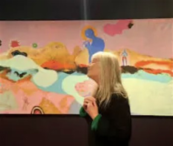

MARIE CLAIRE HAMON, SORROW
We are thrilled to announce the first in a new series of Featured Artworks. On roughly a monthy timeline we will exhibit a single work from an artist we know or have recently been introduced to. We are proud to show this wonderful work, Sorrow as the first in the series, following a recent conversation with Cornwall based artist, Marie Claire Hamon.
Marie-Claire Hamon is a Belgium born Swiss-British artist living and working in Cornwall. She graduated from Falmouth in 1999.

Marie-Claire currently works from Boswednan Studio, a rural space on the edge of Penzance.
She began to receive wider recognition in 2002 when her painting was shortlisted for the Hunting Prize at the Royal College. She has exhibited across Cornwall, London, and throughout the UK. Her work continued to gain critical recognition when her work was shortlisted in 2008 by the drawing room London, to be shown at the drawing show in Newlyn gallery /the Exchange. In 2010 she was shortlisted for the MK open prize.
Her painting Forest Gold was shortlisted for the Wells Contemporary Art Prize in 2020, and The Man Who Exchanged His Briefcase for a Fox selected for the Discerning Eye Prize in London in 2021. That same year, The Insect Collector and The Botanist were chosen for the Newlyn Society of Artists’ 125th anniversary exhibition, curated by Lisa Wright at the Tremenheere Sculpture Park Gallery.
In November 2025 she exhibited at the Newlyn gallery/ The exchange. Her body of work On The Way To The Well explored the emotional history of her surrounding landscape, focusing on the ancient holy wells with their mix of hope, pain and superstition. European surrealism, abstraction and fauvism were the formative influences in her early development as an artist, and while She doesn’t fix herself in any particular genre, she owes to these a certain legacy in the evolution of her own language and sense of aesthetic, to these she also adds the rich heritage of the modernist artists who walked, and worked, in Cornwall.
In 2023, Hamon exhibited her solo show, All Life Comes from the Mountain, in the Borlase Smart Room at Porthmeor Studios. The body of work was created at Treveglos Studio in Zennor and reflected a deep engagement with the area’s history, folklore and cultural layers.
Hamon presented a solo exhibition, We Want to Keep Dreaming, at Tremenheere Sculpture Gardens in 2018. The exhibition's central painting was later included in Let’s Talk About the Anthropocene at the University of Brighton.
In 2016 Hamon participated in On St Michael’s Way, a group exhibition at the 12-Star Gallery at the European Centre for Culture in London. The show, which explored the shared heritage between Cornwall’s Saints’ Way and other pilgrimage routes across Europe, later toured to Tremenheere in Penzance.
In 2013, Hamon took part in an exhibition in the Dark Rooms at CAST in Helston, marking the transformation of the former school building into an arts venue. A year later, she joined the TAap artists' collective and contributed work to a residency in Studio 5 at the historic Porthmeor Studios in St Ives.
Between 2004 and 2011, she was a regular exhibitor at both the Cadogan Gallery in London and the Campden Gallery
Alongside her studio practice, Hamon has contributed to arts education as a visiting lecturer at various colleges and at Falmouth University. She is also a mentor at the Newlyn School of Art.
In 2010, art critic Nicolas Usherwood described her work as “quietly unassuming but intensely poetic… based very firmly on feeling, a feeling which, in its always unmistakable sense of human presence and unseen activity, takes on a powerful, and in this particular context, a very brave sense of the contemporary moment also.”